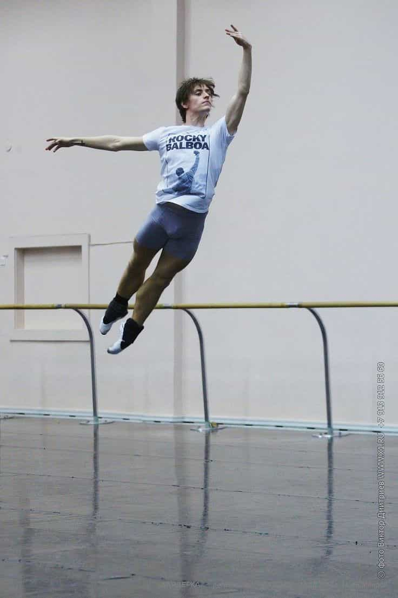

Dawn Pine (aka TheMaleBrain) is an Israeli 40+ divorced father of 2, former casualty of the blue-pill. Since he has taken the red pill his hobbies are: working out, writing, mentoring, harem management and self improvement.


I went to see to the movie “Dancer” a few days ago. This is a documentary on a (relatively) unknown legendary ballet dancer, Sergei Polunin. The movie was released in 2016, but only recently has made it to Israel. The film sneaks under the radar several red-pill truths that are less obvious if one is unaware. I went to see it with a Russian girl, and she confirmed that the movie is true, and that the story is not fabricated.
The movie starts with Polunin sitting in an awkward position, breathing heavily. We do not know what is going on, as this will become clear later in the movie.
The movie tells the story of Sergei Polunin by showing footage and interviewing friends, relatives, and Sergei himself. He was born in 1989 at the town of Kherson, an only child to his parents. He was identified in an early age by the local sports authorities as a great gymnastics before switching to ballet. It seems that he also possessed great flexibility.
When he was 9, his family decided to make sure he will not suffer their fate of poverty. So he moved with his mother to Kiev in order to become part of the Choreographic Academy, while his father and grandmother moved abroad in order to provide the necessary means for his academy tuition.
His mother was a major force in his life, pushing him to excel and train hard. At the age of 13 he moved to London, as his mother assessed the situation and decided that this would be the best way to advance his career. However, his family could not join him there so he had to live alone in a new country with no knowledge of its language or culture. He was considered a ballet genius and at the age of 18 became the youngest principal performer ever for the London Royal Ballet. He was compared to Rudolf Nureyev, the great Soviet dancer who defected to the West.
After two years of immense success, Polunin started to “lose it”. He suffered from depression, started to party and use drugs and eventually quit at the age of 22. He could not stand the pressure and just wanted to “rest”. He soon became aware that he needed to dance, but his reputation as a “loose cannon” did not help.
Eventually he participated in a Russian reality show (“Big Ballet”) and then joined The Stanislavsky Music Theatre and Novosibirsk State Academic Opera and Ballet Theatre. It is mentioned that Igor Zelensky, a former ballet dancer and artistic director, became some sort of father figure for him. That did not work out well, as he quit after less than a year there.

Then we finally understand the beginning of the movie. Polunin decided to quit dancing completely. In order to do so he reached out to his friend Jade Hale-Christofi to create a final dance to the sound of Hozier’s song “Take me to church”. Before dancing that part he actually cried for nine hours. After dancing, and the clip became viral, he actually decided to keep on dancing and even made peace with his family.
To achieve greatness you need to work harder than everyone
That was covered by the manosphere endlessly (my favorite example). You can see how much effort and training were poured into his life. At one point in the movie, he says that during his teens, he practiced twice as much as the other kids. We are talking about the 1% ballet dancers in the world, and he practiced harder than them! The guy had talent, no doubt, but he still worked harder than everyone.
Balance is crucial
Polunin, to my understanding, burned himself up. He was doing ballet all day long. In one part of the movie he says that the body is so used to hard work that if he takes a day off it aches. I’m not sure if this is true, but even if it is – rest is required.
Partying all night and working hard all day will get you both mentally and physically exhausted. I don’t care if you are the world leading ballet dancer, you still need to rest. Other commentators in the movie said that being a principal requires a hermit way of life. If this is true, one must make sure to factor that in as well. It seems that Polunin could not, or did not want to have that. Which brings me to the next lesson…
A father figure is critical for personal development
“Deprived” of his father since the age of 9, Polunin did not see his father for years. The result: depression, partying, substance abuse, and, in my belief, an inability to relax and balance one’s life. As beta as his father is portrayed in the movie, he was still a good influence on him as a child (they both tell how they did stuff together like a typical father and son). No one took his father’s place as a role model until it was too late.
Dominating mother creates lack of masculine maturity
By the end of the movie, we witness Polunin and his mother converse. He says to her that she dominated his life as a child, and she corrects him – she controlled his life. It is not sure if she is proud of it.
The result of four years with a domineering mother was that he lacked the masculine stability to not only reach the top, but to stay there. It becomes clear as he states that he asked his family not to come see him in all the years he has been on stage. He had the feeling that he is not good enough for his mother. That is not a sign of healthy relationship. Which brings me to the next point…
One needs a ritual to move from childhood to adulthood
Also covered extensively by the manosphere (One of my favorite examples). In order to move from boy/teen to adult we all know that a ritual or ceremony is needed. Otherwise a boy does not become a man. Hardships are also part of it.
Polunin decided to dance once last time. He had to confront his inner self and drop the major part of his identity. By doing that, he was able to understand that: 1) dancing is part of him, 2) he could make peace with his family. That is my interpretation. I bet others may have a completely different outlook on that event.

That is one possible ritual
I recommend seeing the movie, as it is an interesting tale of an extraordinary person. What the movie lacked is any glimpse to his romantic life. I took the time to look it up and found that our protagonist is not gay, but dates an older ballerina.
Apart from that, the director did a very good job in portraying a complex person with an interesting life story. Notice also that he had his body tattooed with eleven different tattoos – some childish and some meaningful. In any case, red-pill lessons are “hidden” in the movie. One just needs to open one’s eyes to notice them. Watch the video of him dance; it is inspiring…